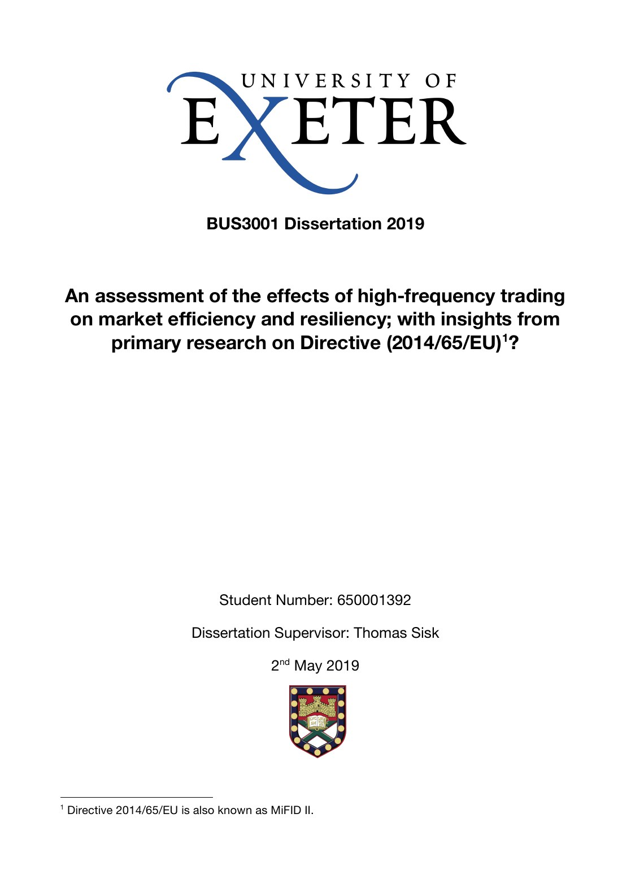

High-Frequency Trading Dissertation

An assessment of the effects of high-frequency trading on market efficiency and resiliency; with insights from primary research on Directive (2014/65/EU) examined a market transformed by algorithmic speed. The dissertation combined financial-market literature with interviews to assess both high-frequency trading and the European Union's MiFID II framework.
Research question
The study asked whether high-frequency trading improves price discovery, liquidity and efficiency—and whether those benefits survive periods of market stress. It also considered darker market structures, payment for order flow, abusive strategies and the limits of contemporary regulation.
Key findings
The dissertation found that high-frequency trading can improve price discovery, liquidity and everyday market efficiency, while amplifying volatility through feedback loops when markets become stressed. Interview evidence also highlighted regulatory gaps, including periodic-auction loopholes. The central conclusion was pragmatic: regulate market abuse vigilantly without suppressing useful computer-driven innovation.